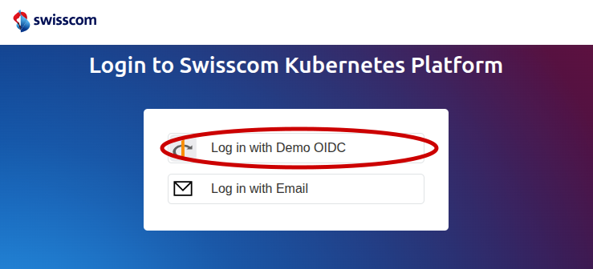
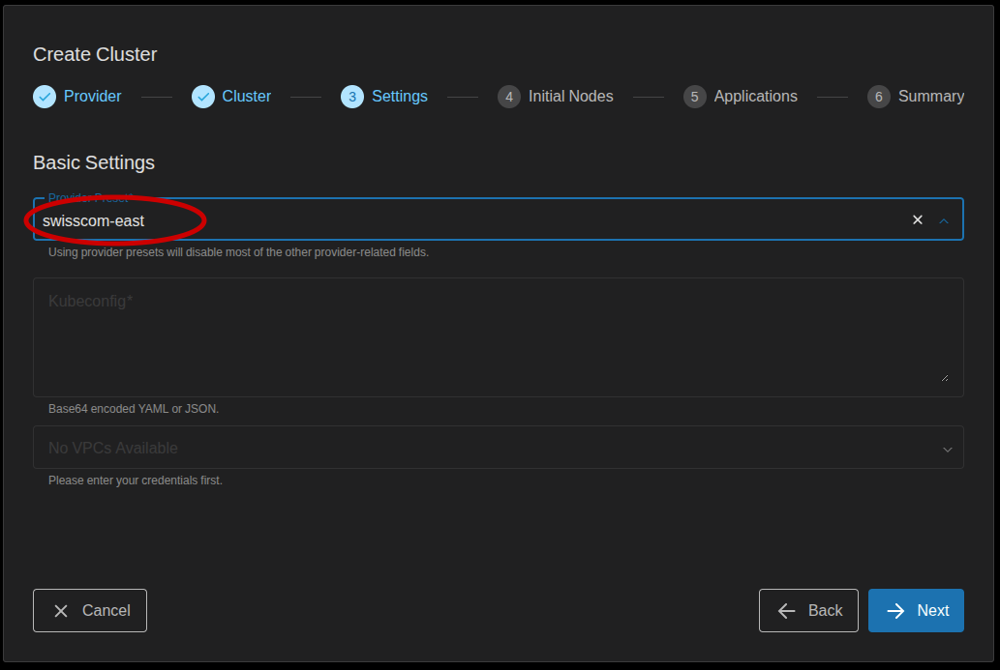
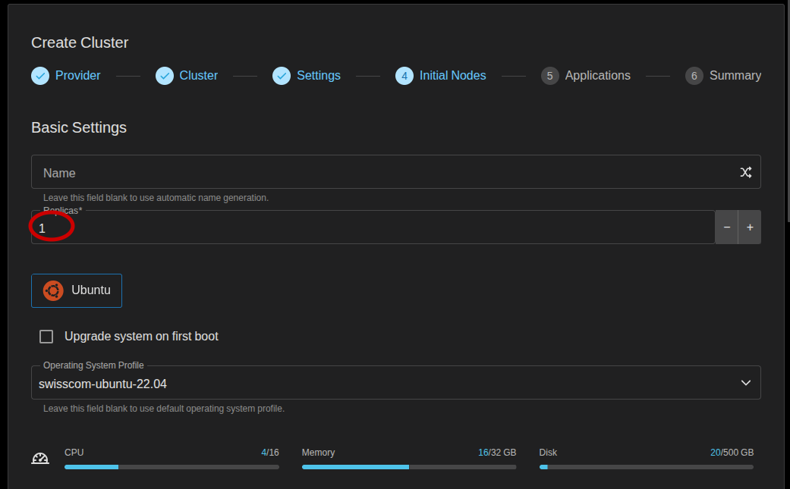
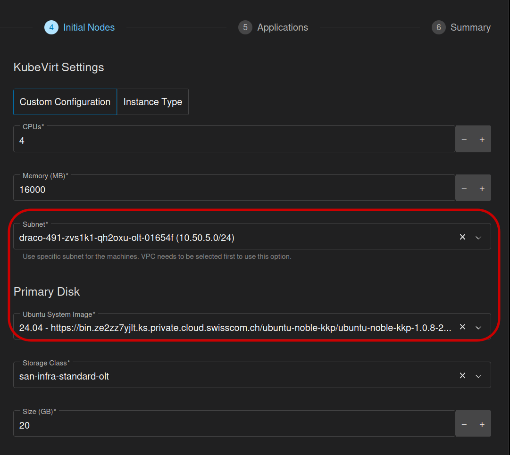
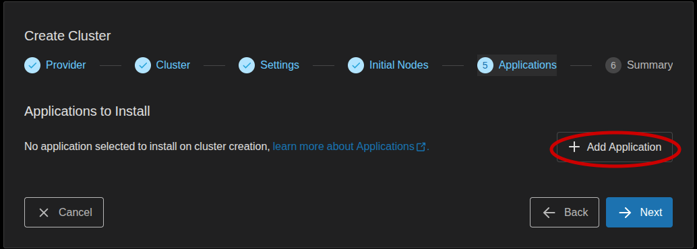
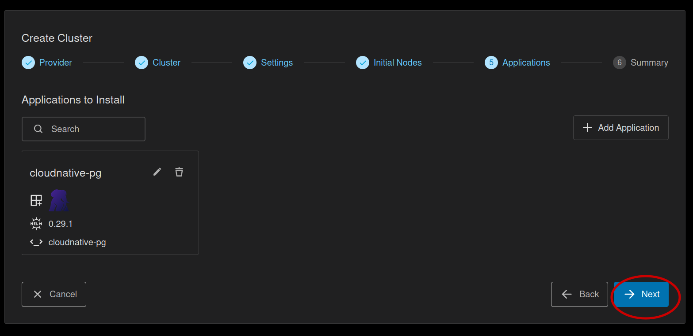
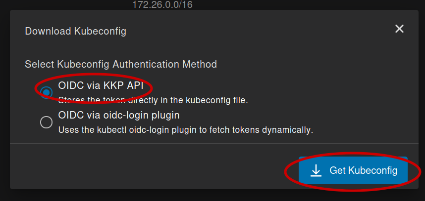

Goal: Create a Kubernetes cluster on the Swisscom Kubernetes Platform
(1 worker node, with cloudnative-pg, ingress-nginx and
cert-manager pre-installed), then download its kubeconfig.
Sign in to the Swisscom Portal
- Open __SC_URL__ and click Sign in.
- On the Login to Swisscom Kubernetes Platform page, choose Log in with Demo OIDC.
- Use these credentials:
User: __SC_LOGIN__
Password: __SC_PASS__
- Click the project you were assigned

Start a new cluster
On the Project Overview page, click Create Resource → Cluster.

The Create Cluster wizard opens with six steps:
Provider → Cluster → Settings → Initial Nodes → Applications → Summary.
1/6Provider
Only one provider and one datacenter are offered: select KubeVirt,
then the datacenter east (CH), and click Next.
2/6Cluster
- Enter a Name for the cluster (or click the shuffle icon to generate one).
- Keep all the other defaults (control plane version, Cilium CNI…).
- Scroll down and click Next.

3/6Settings
In Provider Preset, select the only choice offered,
swisscom-east, then click Next.

4/6Initial Nodes
Set up a single worker node with these values, then click Next:
| Field | Value |
|---|
| Replicas | 1 |
| Operating system | Ubuntu (profile swisscom-ubuntu-24.04) |
| CPUs | 4 |
| Memory (MB) | 16000 (≈16 GB) |
| Subnet | any available subnet |
| Primary disk – Ubuntu system image | Ubuntu 24.04 image |
| Primary disk – Size (GB) | 20 |



5/6Applications
Add these 3 applications, one after the other:
- cloudnative-pg
- ingress-nginx
- cert-manager
For each one:
- Click + Add Application and select the application.
- Settings tab: keep the default version, namespace and name, click Next.
- Application Values tab: keep the default values, click Add Application.

The 3 applications should now be listed under Applications to Install.
Click Next.

6/6Summary
Before creating the cluster, check the summary:
- Initial Nodes: 1 replica
- CPUs: 4
- Memory: 16000M (≈16 GB)
- Disk size: 20G
- Applications: cloudnative-pg, ingress-nginx and cert-manager
If everything is correct, click Create Cluster.

Download the kubeconfig
- On the cluster page, click Get Kubeconfig.
- Keep OIDC via KKP API selected and click Get Kubeconfig.


Warning: Do not overwrite an existing ~/.kube/config; use the KUBECONFIG variable instead.
Find the downloaded file and move it somewhere easy
The next labs use this file from a terminal, so you need to know its exact path.
The browser saves it in your Downloads folder, usually under a name starting with
kubeconfig. If you are not sure where it went, press Ctrl+J
(⌘+⌥+L on macOS Safari) to open the browser's
download list, then click Show in folder.
Then copy it to a short, fixed path, for example ~/workshop/kubeconfig:
Linux / macOS
mkdir -p ~/workshop
mv ~/Downloads/kubeconfig* ~/workshop/kubeconfig
chmod 600 ~/workshop/kubeconfig
ls -l ~/workshop/kubeconfig
Windows (WSL)
Your browser runs on Windows, so the file is in the Windows Downloads folder
(C:\Users\<you>\Downloads). From WSL, this folder is reachable under
/mnt/c/. Run this in your WSL terminal to copy the file into your Linux home:
WIN_HOME=$(wslpath "$(cmd.exe /c 'echo %USERPROFILE%' 2>/dev/null | tr -d '\r')")
ls "$WIN_HOME"/Downloads/kubeconfig*
mkdir -p ~/workshop
cp "$WIN_HOME"/Downloads/kubeconfig* ~/workshop/kubeconfig
chmod 600 ~/workshop/kubeconfig
ls -l ~/workshop/kubeconfig
- If
ls lists several files (you downloaded it twice), keep the most recent one.
- Windows Explorer may hide the file extension: the file can show up as
kubeconfig-admin-xxxx while its real name is different. The ls above shows the real name.
- Always work from the WSL terminal, not PowerShell: all the commands of this workshop are written for bash.
Done! The cluster takes a few minutes to be created.
Let it run in the background and come back to the slides: we will use the kubeconfig in the next lab.